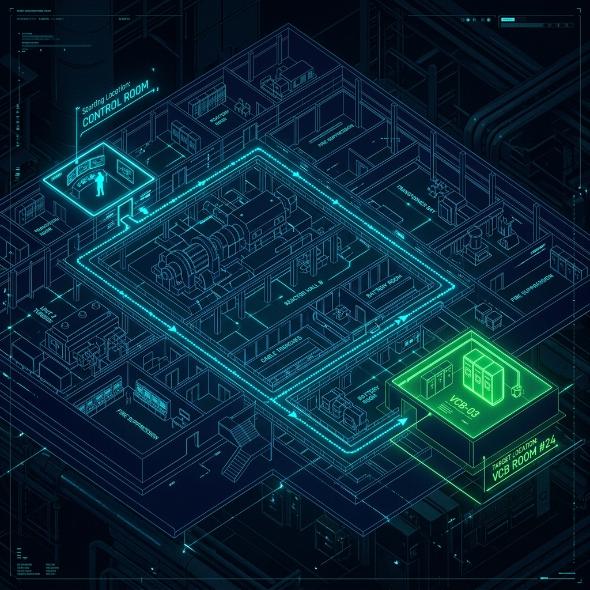
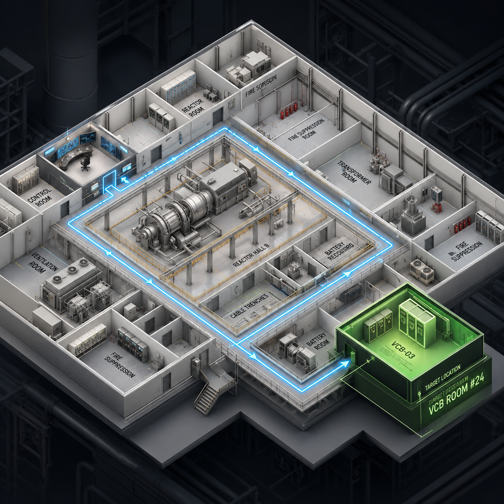
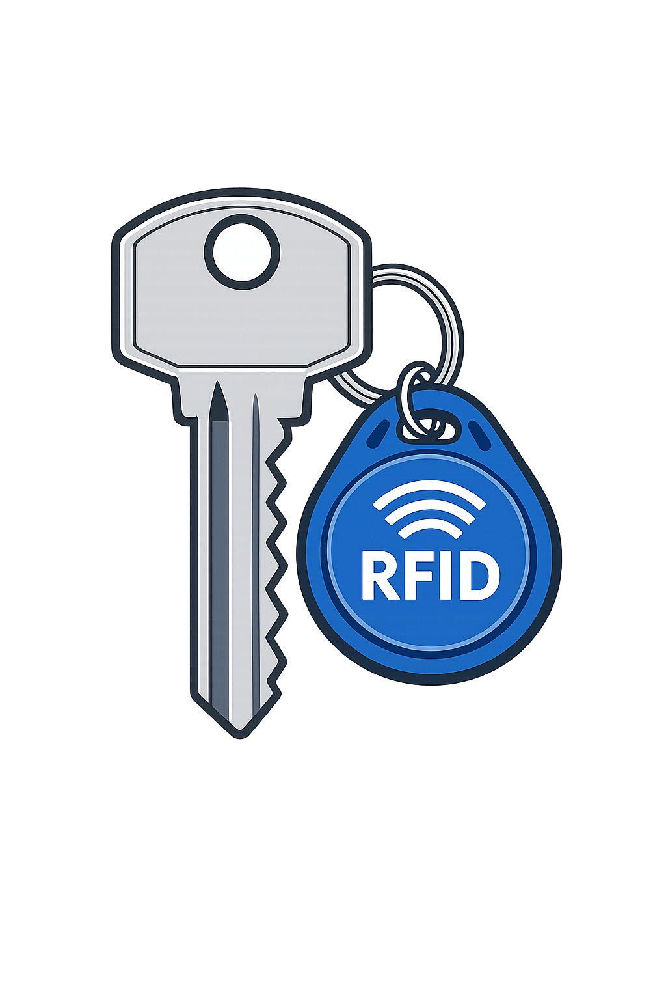

KOEN YEOSU · SMART LOTO
RFID 기반
키 보관함 키오스크
한국남동발전 여수발전본부의 설비 격리·LOTO 업무를 더 안전하고 빠르게 수행하기 위한 WPF 키오스크 앱 프로토타입 공유 페이지입니다.

Target LocationVCB ROOM #24
RFID AUTH
업무 목표
키 불출·반납, 사용자 인증, 작업 위치 안내, 이력 추적을 하나의 키오스크 흐름으로 정리합니다.
RFID
작업자 인증RFID 태그 또는 사번 인증으로 권한을 확인하고 승인된 키만 불출합니다.KEY
키 보관함 관리키 슬롯 상태, 불출 가능 여부, 반납 누락 여부를 실시간으로 표시합니다.MAP
설비 위치 안내제어실, 변압기실, VCB 룸 등 목적지까지의 작업 동선을 시각화합니다.LOG
작업 이력 추적불출자, 시간, 작업대상, 반납 상태를 기록하여 안전 감사 자료로 활용합니다.프로토타입 화면 콘셉트
첨부된 시안 이미지를 웹에서 바로 확인할 수 있도록 GitHub Pages용 정적 페이지로 구성했습니다.


예상 업무 흐름
WPF 앱 구현 시 기본 화면 전환과 데이터 기록 기준으로 활용할 수 있는 시나리오입니다.
작업자 로그인RFID/사번 인증 후 사용자 권한과 작업 허가 상태를 확인합니다.
작업 선택LOTO 대상 설비, 작업번호, 목적 위치를 선택합니다.
키 불출승인된 키 슬롯을 점등하고 불출 시간을 자동 기록합니다.
위치 안내제어실·VCB 룸 등 목표 위치와 이동 경로를 화면에 표시합니다.
반납/마감키 반납 확인, 작업 종료, 이력 저장으로 절차를 마감합니다.